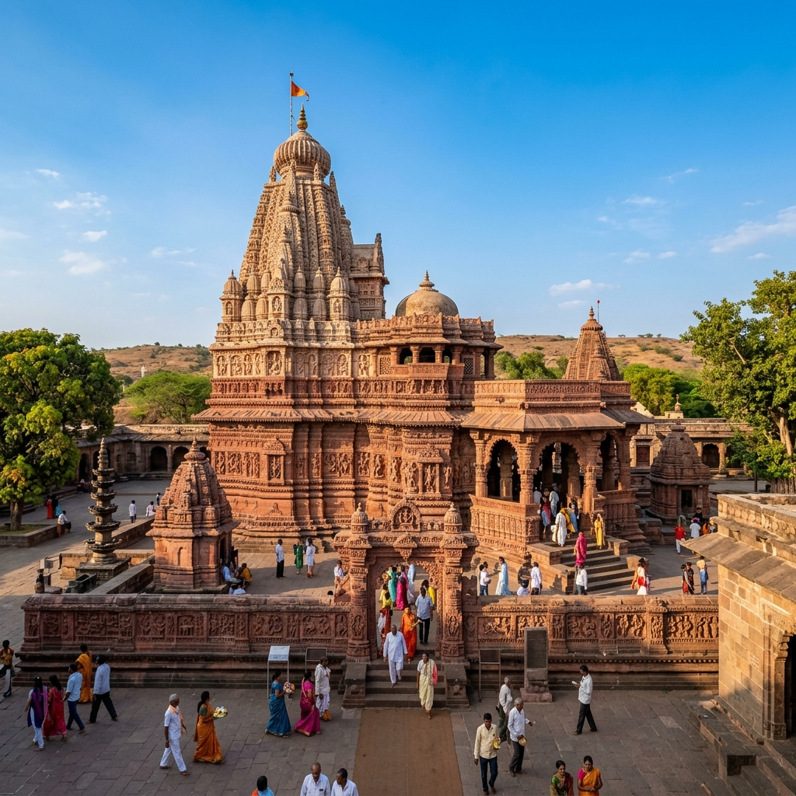
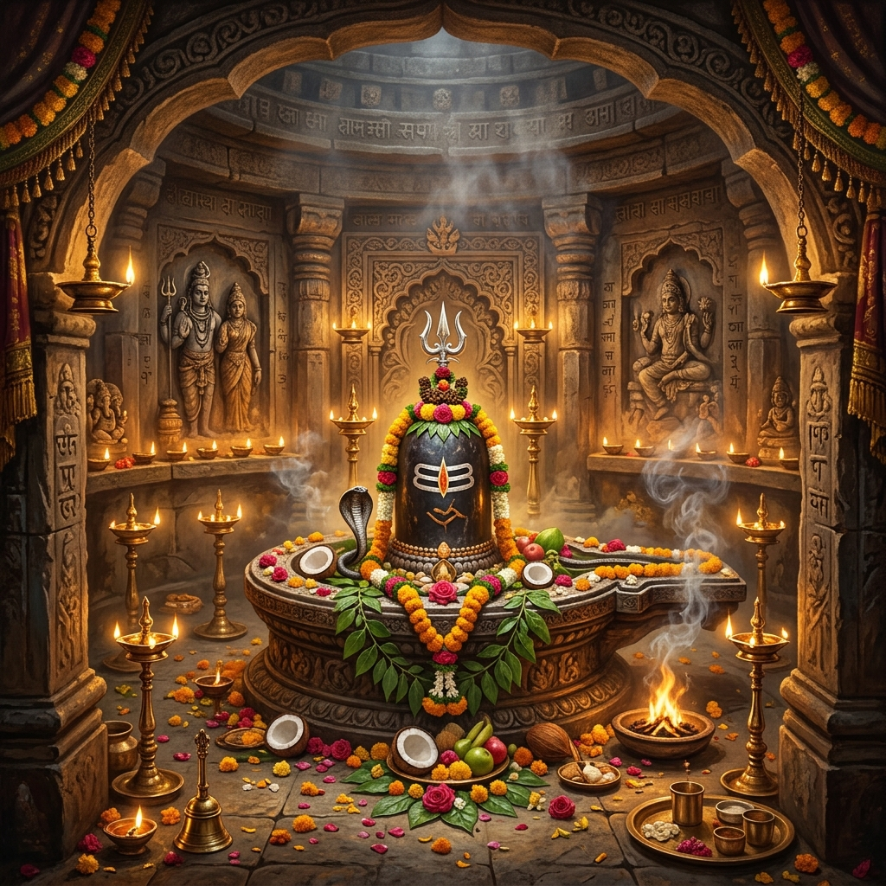

About Temple
Visiting Kalaram Temple in Nashik feels peaceful and spiritually grounded, especially if you are looking for a calm temple experience without too much crowd or noise. Located near the banks of the Godavari River in the Panchavati area, the temple has a simple yet powerful presence. It’s the kind of place where you can spend time quietly, take darshan at your own pace, and feel connected to the deeper roots of Ramayana-related history.
Ramayana History
Panchavati Area
Peaceful & Calm
Quiet Reflection

History & Significance

Kalaram Temple is dedicated to Lord Rama and is believed to be closely connected with the Ramayana, as Nashik is said to be part of the region where Lord Rama stayed during his exile. The temple was built in the 18th century by Sardar Rangarao Odhekar. The name "Kalaram" comes from the black-colored idol of Lord Rama, which is the main attraction of the temple. It has also played an important role in social history, especially during movements for equality and temple entry.
Est. 18th Cent.
Sardar Rangarao Odhekar
Social History
Equality Movements
What Makes It Unique
Discover the unique factors that set Kalaram Temple apart from other shrines.


Travel Guide
Convenient ways to reach the temple in Nashik.
Option 1: City Rail & Road Transit
Located directly in Nashik city, the temple is extremely easy to access. Cabs, shared auto-rickshaws, and city transport buses are easily available to travel directly to Panchavati.
Nashik Transit ConnectionsOption 2: Driving Routes
From Mumbai, it takes around 3–4 hours by car (~170 km). From Pune, it is around 5–6 hours via the Nashik highways.
Mumbai (3-4 hrs) | Pune (5-6 hrs)Option 3: Local Walking Access
Panchavati is a compact spiritual zone. Devotees regularly walk from nearby attractions like Ram Kund and Sita Gufa straight to the temple.
Essential Information
Important details regarding timings, queues, and ideal visiting slots.
Timings & Crowds
Opens at 5:30 AM and closes at 10:00 PM. Morning hours are highly peaceful; evening aarti attracts more local devotees.
Entry & Offerings
General entry for darshan is completely free. Traditional offerings can be bought outside the main gates but are not compulsory.
Best Time to Visit
October to March is ideal. Ram Navami and Kumbh Mela bring deep devotional vibes though Nashik becomes extremely crowded.
Location & Coordinates
Panchavati area, Nashik city, Maharashtra, India